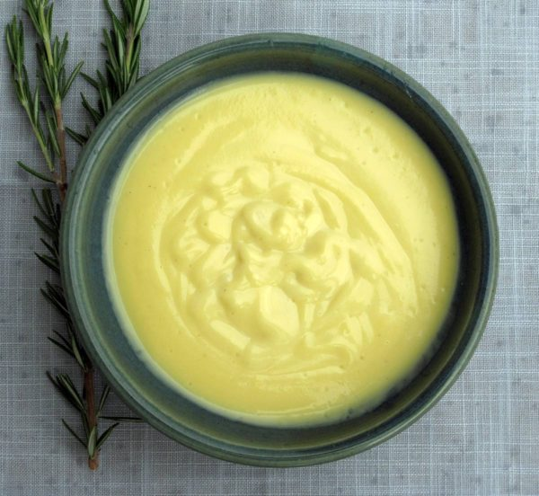

Roasted sweet potato butternut squash soup
You can't go wrong with soup made from roasted vegetables. The flavour is intense and each bowl is full of nutrition. Garnish with snipped chives for an impressive presentation.
Sweet potato
1
medium
Butternut squash
1
medium
Red onion
1
medium
Olive oil
2
tbsp
Garlic cloves
5
Vegetable stock
3 3/4
cup
Cream
1/2
cup
Salt
1
dash
Pepper
1
dash
Preheat oven to 375 degrees.
Cut the
1 medium Sweet potato
1 medium butternut squash
1 medium Red onion
in half lengthwise. Scoop the seeds out of the butternut squash. Brush the cut sides with oil.
Put the vegetables, cut-side down, on a baking sheet. Add the
5 Garlic cloves
and roast for about 40 minutes, until tender.
Scoop the flesh from the sweet potato and butternut squash, and put in a large pot. Remove the skin from the onion and garlic and add to the pot.
Add the
3 3/4 cup vegetable stock
1 dash salt
and bring to a boil. After boiling, reduce heat and simmer, partially covered, for about 30 minutes. Stir occasionally.
Allow soup to cool, then transfer to a food processor or blender. Blend until smooth.
Return the soup to the pot, and stir in
1/2 cup Cream
Reheat, and season with salt and pepper.
